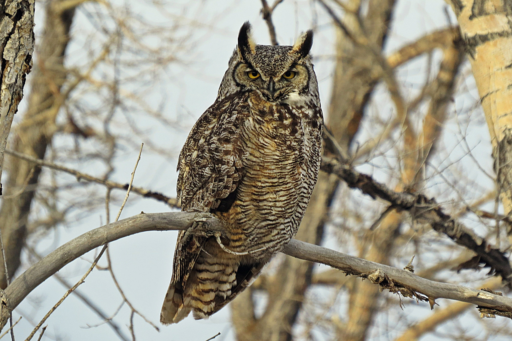

Neat facts
- x
- y
| Binomial Name | Agelaius phoeniceus |
|---|---|
| Length | 17-23 cm |
| Wingspan | 31-40 cm |
| Weight | 32-77 g |
| Habitat | Marshes and rice paddies, sedge meadows, alfalfa fields, wooded areas along waterways |
| Food | Insects, corn, wheat, ragweed, cocklebur, sunflowers |
| Nest Location | Low among vertical shoots of marsh vegetation, shrubs, or trees |
| Nest Size | 4-7 inches across, 3-7 inches deep |
| Egg Description | Pale blue-green to gray with black or brown markings |
| Clutch Size | 2-4 eggs |
In the dark of night, if you patiently search the twisted maze of branches, you might just spot one of these majestic predators.